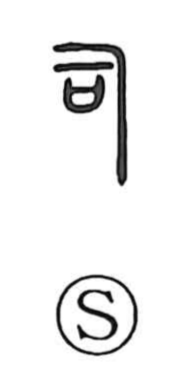

司

Kun: tsukasadoru | On: shi
to administer ・ to preside over ・ official
Explanation
This is a compound graph combining 刁 and 口. Shirakawa takes 刁 as a ritual implement used in worship, while 口 here represents the sai, a covenant vessel into which written prayers to the gods were placed. The character thus depicts the act of supplication: an officiant chanting prayers and handling the sacred tools before the prayer receptacle. From this ritual scene the meaning ‘to preside, to administer’ arose. In light of 同—understood as the prayer-vessel used when inquiring of the deities—the figure implied by 司 is the person who reads out and interprets the divine will.